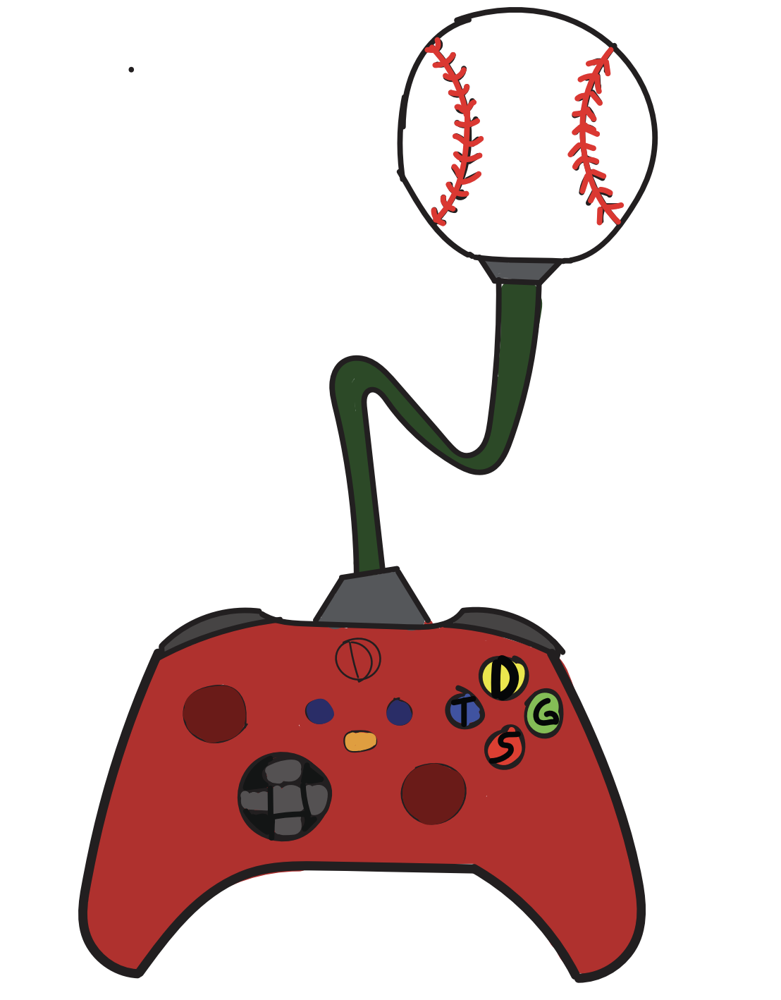

visual design artifacts

for this one i made a potato head with naruto parts making a crazy looking orange

in this art work i decided to choose my two favorite hobbies and make a logo out of it combining baseball and gaming

for this one i chose sleepy hollow and made a lit album cover whitch him in space
in this one i made a custom sneaker combining jeezys and airforces with color inspiration from iron mans mark 5 armor
home page